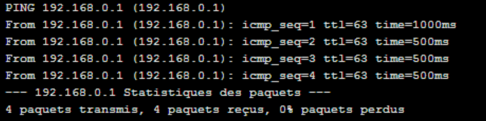
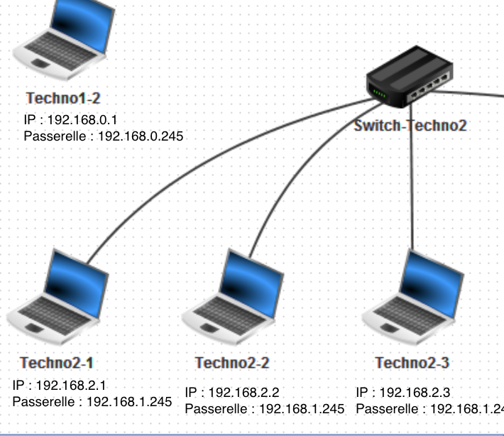

Séance 3
Notion de protocole -
Adresse IP
Lire les questions de la fiche élève avant de regarder la vidéo et répondre aux questions sur votre cahier
Fiche élève à imprimer et à coller
Application : Protocole TCP/IP avec filius
-1- Configurer les éléments du réseau et tester le paramétrage et les connexions. : -
2.1 - Lancer le logiciel Filius et ouvrir votre fichier de travail sur l'architecture du réseau du collège.
2.2 - Aidez-vous de la vidéo ressource configurer les adresses IP ci-dessous pour configurer les adresses IP...des ordinateurs des salles de technologie 1 et 2,du serveur,des passerelles du routeur.
Attention : Arrêtez le tuto à 25"10
Ressource : Configurer les adresses IP (des ordinateurs et des passerelles du réseau du collège ).
-2.3- Tester votre configuration en suivant la ressources : Tester la configuration du réseau ci-dessous.
Vous devez réalisez :
un ipconfig sur l'ordinateur 1 de la salle de technologie 1 et vérifier son adresse IP : 192.168.0.1
un ping de la passerelle du sous réseau techno1 : ping 192.168.0.245
un ping du serveur en 10.124.34.1
un ping d'un des ordinateur de la salle de techno 2.
Attention les trois pings doivent vous donner des réponses positives comme par exemple :

On voit ici que 4 paquets ont été transmis et que 4 ont été reçus.
2.4 - Complétez votre fiche de trace écrite en réécrivant les adresse IP de tous les ordinateurs du réseau ainsi que leurs passerelles. Exemple :

🧠 Teste tes connaissances
Réponds aux questions puis clique sur « Vérifier » — la correction s'affiche aussitôt.
1. Quelle commande permet de vérifier l'adresse IP d'un ordinateur du réseau ?
2. Quelle commande sert à tester la connexion vers une autre machine du réseau ?
3. Quelle est l'adresse IP de l'ordinateur 1 de la salle de technologie 1 ?
4. Dans l'exemple donné, comment reconnaît-on qu'un ping a réussi ?